Temporal Stability
Brief Description
We used the Meta-Analytic Stability and Change model (Anusic & Schimmack, 2015) to describe the trajectory of the test-retest correlations of risk preference over time.
\[ \begin{aligned} Y_{t2-t1} = rel \times \ (change \times \ (stabch^{time} - 1) + 1) \end{aligned} \]
\(Y_{t2-t1}\) : test-retest correlation for a specific time interval (i.e., number of years between t1 and t2)
\(rel\) : proportion of reliable variance
\(change\) : proportion of reliable variance explained by changing factors
\(stabch\) : the stability of the changing factors over time (per year)
\(time\) : number of years between t1 and t2

Illustration of MASC parameters. Adapted from Anusic and Schimack, 2015
Below, we provide information on the model specifications and an overview of the model summaries, including posterior predictive checks (PPCs), approximate leave-one-out (LOO) cross-validation output, and convergence diagnostics (i.e., Rhat values, trace plots, effective sample size). We fitted the same model separately to the set of test-retest correlations for each risk preference measure category (i.e., propensity, frequency, and behavior).
To replicate these analyses, refer to the Workflow page
Model specification in brms
# specify family
family <- brmsfamily(
family = "student",
link = "identity"
)
# formula
formula <- bf(
wcor|resp_se(sei, sigma = TRUE) ~ rel * (change * ((stabch^time_diff_dec) - 1) + 1),
nlf(rel ~ inv_logit(logitrel)),
nlf(change ~ inv_logit(logitchange)),
nlf(stabch ~ inv_logit(logitstabch)),
logitrel ~ 1 + age_dec_c*domain_name + age_dec_c2*domain_name + female_prop_c + item_num_c + (1 + age_dec_c + age_dec_c2 + female_prop_c | sample),
logitchange ~ 1 + age_dec_c*domain_name + age_dec_c2*domain_name + female_prop_c,
logitstabch ~ 1 + age_dec_c*domain_name + age_dec_c2*domain_name + female_prop_c,
nl = TRUE
)
# weakly informative priors
priors <-
prior(normal(0, 1), nlpar="logitrel", class = "b") +
prior(normal(0, 1), nlpar="logitchange", class = "b") +
prior(normal(0, 1), nlpar="logitstabch", class = "b") +
prior(cauchy(0, 1), nlpar="logitrel", class = "sd") +
prior(cauchy(0, 1), class = "sigma") +
prior(lkj(1), group="sample", class = "L") Fitted Models: Risk Preference
Propensity
Model Summary
brms output
## Family: student
## Links: mu = identity; sigma = identity; nu = identity
## Formula: wcor | resp_se(sei, sigma = TRUE) ~ rel * (change * ((stabch^time_diff_dec) - 1) + 1)
## rel ~ inv_logit(logitrel)
## change ~ inv_logit(logitchange)
## stabch ~ inv_logit(logitstabch)
## logitrel ~ 1 + age_dec_c * domain_name + age_dec_c2 * domain_name + female_prop_c + item_num_c + (1 + age_dec_c + age_dec_c2 + female_prop_c | sample)
## logitchange ~ 1 + age_dec_c * domain_name + age_dec_c2 * domain_name + female_prop_c
## logitstabch ~ 1 + age_dec_c * domain_name + age_dec_c2 * domain_name + female_prop_c
## Data: data_w (Number of observations: 3794)
## Draws: 2 chains, each with iter = 7000; warmup = 2000; thin = 1;
## total post-warmup draws = 10000
##
## Multilevel Hyperparameters:
## ~sample (Number of levels: 53)
## Estimate Est.Error l-95% CI u-95% CI Rhat Bulk_ESS Tail_ESS
## sd(logitrel_Intercept) 1.05 0.12 0.84 1.32 1.00 1380 2840
## sd(logitrel_age_dec_c) 0.07 0.02 0.05 0.12 1.00 2478 4769
## sd(logitrel_age_dec_c2) 0.03 0.01 0.02 0.04 1.00 2262 3770
## sd(logitrel_female_prop_c) 0.31 0.06 0.19 0.45 1.00 2748 4140
## cor(logitrel_Intercept,logitrel_age_dec_c) 0.21 0.31 -0.40 0.75 1.00 2547 3876
## cor(logitrel_Intercept,logitrel_age_dec_c2) -0.29 0.28 -0.76 0.31 1.00 3882 4982
## cor(logitrel_age_dec_c,logitrel_age_dec_c2) -0.12 0.27 -0.59 0.44 1.00 2241 4171
## cor(logitrel_Intercept,logitrel_female_prop_c) 0.52 0.18 0.11 0.79 1.00 3490 5418
## cor(logitrel_age_dec_c,logitrel_female_prop_c) -0.08 0.31 -0.64 0.52 1.00 1147 1874
## cor(logitrel_age_dec_c2,logitrel_female_prop_c) 0.14 0.30 -0.46 0.71 1.00 1355 2345
##
## Regression Coefficients:
## Estimate Est.Error l-95% CI u-95% CI Rhat Bulk_ESS Tail_ESS
## logitrel_Intercept 0.46 0.20 0.07 0.85 1.00 587 1277
## logitrel_age_dec_c 0.02 0.06 -0.10 0.14 1.00 967 936
## logitrel_domain_namedri 0.12 0.10 -0.10 0.32 1.00 1255 2054
## logitrel_domain_nameeth 0.20 0.57 -0.79 1.48 1.00 1113 1754
## logitrel_domain_namegam 0.14 0.20 -0.22 0.55 1.00 3557 5109
## logitrel_domain_namegen 0.15 0.10 -0.07 0.33 1.00 827 1228
## logitrel_domain_namehea_gen -0.16 0.11 -0.39 0.06 1.00 1619 2861
## logitrel_domain_nameinv -0.01 0.09 -0.22 0.15 1.00 916 1110
## logitrel_domain_nameocc -0.37 0.10 -0.59 -0.18 1.00 1213 1552
## logitrel_domain_namesoc -0.27 0.23 -0.55 0.36 1.00 714 371
## logitrel_age_dec_c2 0.02 0.07 -0.04 0.23 1.02 266 300
## logitrel_female_prop_c -0.12 0.06 -0.23 -0.01 1.00 1257 3507
## logitrel_item_num_c 1.01 0.23 0.58 1.47 1.00 3724 5074
## logitrel_age_dec_c:domain_namedri -0.19 0.08 -0.36 -0.03 1.00 1962 2402
## logitrel_age_dec_c:domain_nameeth -0.00 0.34 -0.77 0.85 1.00 991 659
## logitrel_age_dec_c:domain_namegam 0.18 0.14 -0.09 0.45 1.00 3581 5552
## logitrel_age_dec_c:domain_namegen 0.05 0.06 -0.08 0.17 1.00 942 972
## logitrel_age_dec_c:domain_namehea_gen -0.10 0.09 -0.28 0.06 1.00 2210 3399
## logitrel_age_dec_c:domain_nameinv -0.02 0.06 -0.14 0.11 1.00 1124 866
## logitrel_age_dec_c:domain_nameocc 0.15 0.07 0.02 0.29 1.00 1345 1220
## logitrel_age_dec_c:domain_namesoc -0.02 0.11 -0.28 0.18 1.00 1297 1078
## logitrel_domain_namedri:age_dec_c2 0.02 0.07 -0.19 0.10 1.01 288 316
## logitrel_domain_nameeth:age_dec_c2 0.06 0.52 -0.29 1.73 1.01 265 305
## logitrel_domain_namegam:age_dec_c2 0.11 0.09 -0.12 0.27 1.01 429 366
## logitrel_domain_namegen:age_dec_c2 -0.06 0.07 -0.27 0.01 1.01 264 303
## logitrel_domain_namehea_gen:age_dec_c2 0.03 0.07 -0.18 0.13 1.01 308 311
## logitrel_domain_nameinv:age_dec_c2 -0.04 0.07 -0.26 0.02 1.01 267 308
## logitrel_domain_nameocc:age_dec_c2 -0.05 0.07 -0.27 0.03 1.01 271 299
## logitrel_domain_namesoc:age_dec_c2 -0.06 0.09 -0.28 0.11 1.01 318 385
## logitchange_Intercept -0.11 0.35 -0.70 0.68 1.01 907 1978
## logitchange_age_dec_c 0.40 0.26 -0.09 0.96 1.00 1999 2805
## logitchange_domain_namedri -0.27 0.58 -1.31 0.97 1.00 1914 3333
## logitchange_domain_nameeth 0.30 0.64 -0.79 1.74 1.00 946 4281
## logitchange_domain_namegam 0.46 0.91 -1.34 2.24 1.00 3495 5560
## logitchange_domain_namegen -0.07 0.41 -0.92 0.73 1.00 973 2045
## logitchange_domain_namehea_gen -0.11 0.46 -0.99 0.85 1.00 1634 2631
## logitchange_domain_nameinv -0.33 0.36 -1.12 0.29 1.00 950 2154
## logitchange_domain_nameocc -0.19 0.81 -1.67 1.52 1.00 1853 4664
## logitchange_domain_namesoc -0.64 0.80 -2.16 1.06 1.00 2835 4265
## logitchange_age_dec_c2 0.55 0.27 0.12 1.20 1.00 804 1880
## logitchange_female_prop_c 0.05 0.07 -0.09 0.19 1.00 1060 3225
## logitchange_age_dec_c:domain_namedri -0.04 0.51 -0.91 1.06 1.00 4009 4342
## logitchange_age_dec_c:domain_nameeth -0.33 0.63 -1.46 1.12 1.00 3132 4745
## logitchange_age_dec_c:domain_namegam 0.14 0.78 -1.39 1.75 1.00 5927 6754
## logitchange_age_dec_c:domain_namegen -0.27 0.31 -0.87 0.35 1.00 2313 3045
## logitchange_age_dec_c:domain_namehea_gen -0.17 0.39 -0.86 0.70 1.00 2789 3581
## logitchange_age_dec_c:domain_nameinv 0.79 0.30 0.18 1.37 1.00 2418 4034
## logitchange_age_dec_c:domain_nameocc 0.36 0.68 -0.93 1.73 1.00 3124 6091
## logitchange_age_dec_c:domain_namesoc -0.09 0.73 -1.45 1.52 1.00 4677 5795
## logitchange_domain_namedri:age_dec_c2 -0.10 0.37 -0.82 0.63 1.00 1197 2101
## logitchange_domain_nameeth:age_dec_c2 -0.35 0.58 -1.34 1.13 1.00 2083 3315
## logitchange_domain_namegam:age_dec_c2 0.96 0.76 -0.60 2.42 1.00 3166 2251
## logitchange_domain_namegen:age_dec_c2 -0.40 0.28 -1.05 0.04 1.00 743 1975
## logitchange_domain_namehea_gen:age_dec_c2 -0.33 0.32 -1.01 0.22 1.00 1097 1986
## logitchange_domain_nameinv:age_dec_c2 0.18 0.28 -0.47 0.62 1.00 849 1956
## logitchange_domain_nameocc:age_dec_c2 0.07 0.68 -1.03 1.68 1.00 1433 2813
## logitchange_domain_namesoc:age_dec_c2 -0.60 0.73 -2.13 1.06 1.00 2934 3783
## logitstabch_Intercept -0.61 0.42 -1.49 0.17 1.01 683 1830
## logitstabch_age_dec_c 0.51 0.24 0.04 0.98 1.00 1371 2815
## logitstabch_domain_namedri 0.47 0.64 -0.87 1.63 1.00 2737 4337
## logitstabch_domain_nameeth -0.18 0.75 -1.80 1.12 1.00 1297 3724
## logitstabch_domain_namegam -1.58 0.78 -3.05 -0.01 1.00 3981 5778
## logitstabch_domain_namegen 0.30 0.51 -0.64 1.34 1.00 921 2280
## logitstabch_domain_namehea_gen -0.53 0.69 -1.93 0.77 1.00 2838 2964
## logitstabch_domain_nameinv 0.25 0.44 -0.57 1.14 1.00 845 1835
## logitstabch_domain_nameocc 0.95 0.76 -0.80 2.17 1.00 1814 3549
## logitstabch_domain_namesoc 0.46 1.10 -2.00 2.32 1.00 975 610
## logitstabch_age_dec_c2 -0.22 0.17 -0.57 0.09 1.01 360 728
## logitstabch_female_prop_c -0.31 0.08 -0.46 -0.15 1.00 4487 7067
## logitstabch_age_dec_c:domain_namedri 0.52 0.41 -0.25 1.34 1.00 3485 5186
## logitstabch_age_dec_c:domain_nameeth 0.05 0.69 -1.34 1.46 1.00 2810 3774
## logitstabch_age_dec_c:domain_namegam -1.04 0.70 -2.58 0.23 1.00 3600 4892
## logitstabch_age_dec_c:domain_namegen -0.12 0.27 -0.66 0.39 1.00 1441 2518
## logitstabch_age_dec_c:domain_namehea_gen 0.19 0.46 -0.71 1.08 1.00 3180 5378
## logitstabch_age_dec_c:domain_nameinv 1.04 0.28 0.49 1.60 1.00 1926 3460
## logitstabch_age_dec_c:domain_nameocc -0.36 0.49 -1.24 0.73 1.00 2408 3438
## logitstabch_age_dec_c:domain_namesoc 0.04 0.83 -1.61 1.72 1.00 3717 5358
## logitstabch_domain_namedri:age_dec_c2 -0.07 0.19 -0.42 0.33 1.01 448 837
## logitstabch_domain_nameeth:age_dec_c2 -0.33 0.77 -2.11 0.77 1.01 302 611
## logitstabch_domain_namegam:age_dec_c2 -0.08 0.35 -0.77 0.57 1.00 1416 2511
## logitstabch_domain_namegen:age_dec_c2 0.18 0.18 -0.14 0.55 1.01 367 720
## logitstabch_domain_namehea_gen:age_dec_c2 -0.06 0.25 -0.70 0.36 1.01 607 1152
## logitstabch_domain_nameinv:age_dec_c2 -0.12 0.17 -0.43 0.23 1.01 371 763
## logitstabch_domain_nameocc:age_dec_c2 0.13 0.21 -0.25 0.56 1.01 579 1756
## logitstabch_domain_namesoc:age_dec_c2 0.30 0.83 -1.46 1.95 1.00 1038 1496
##
## Further Distributional Parameters:
## Estimate Est.Error l-95% CI u-95% CI Rhat Bulk_ESS Tail_ESS
## sigma 0.03 0.00 0.03 0.03 1.00 6413 6943
## nu 3.73 0.23 3.31 4.22 1.00 8057 7442
##
## Draws were sampled using sample(hmc). For each parameter, Bulk_ESS
## and Tail_ESS are effective sample size measures, and Rhat is the potential
## scale reduction factor on split chains (at convergence, Rhat = 1).MCMC diagnostics
logitrel parameter
logitchange parameter
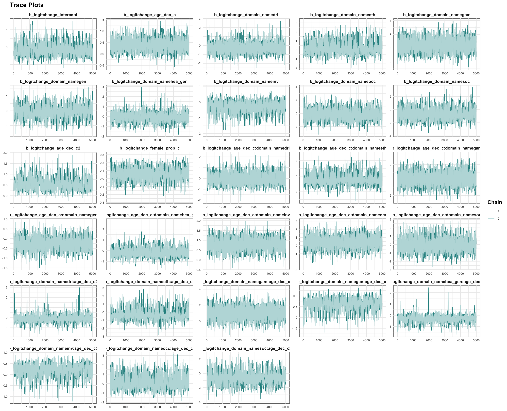

logitstabch parameter
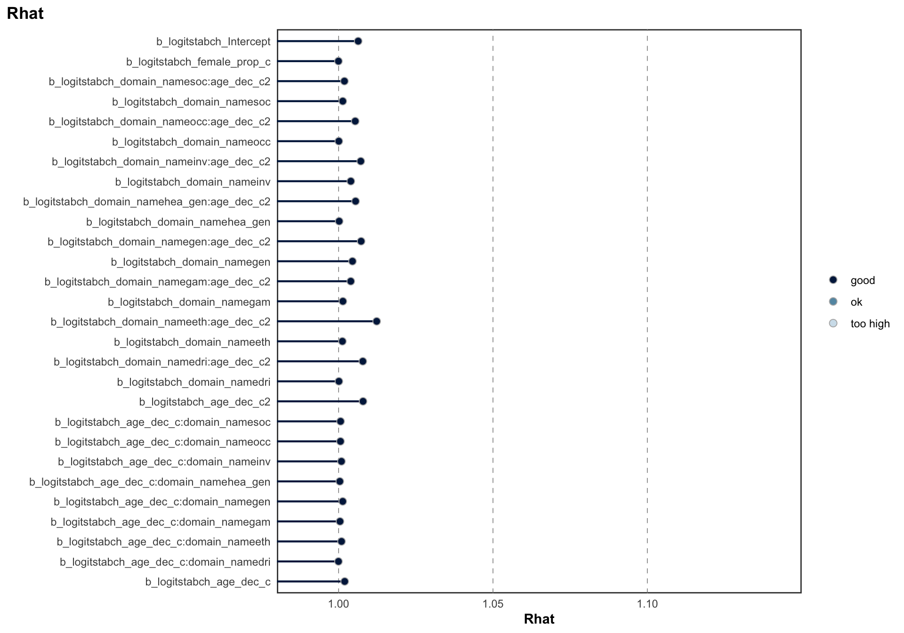
Random Structure
PPCs & LOO
Graphical posterior predictive checks
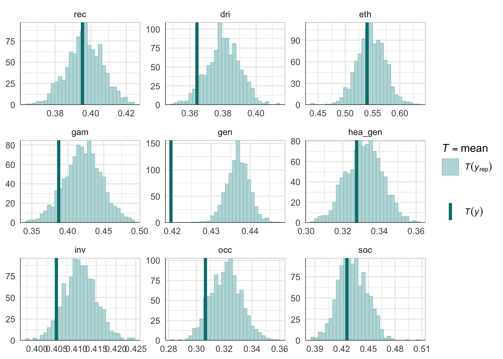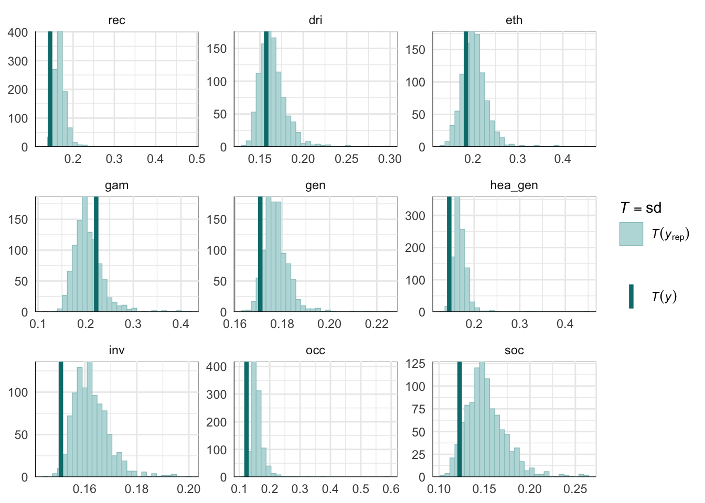
##
## Computed from 10000 by 3794 log-likelihood matrix.
##
## Estimate SE
## elpd_loo 3976.7 66.1
## p_loo 218.3 5.9
## looic -7953.5 132.2
## ------
## MCSE of elpd_loo is 0.2.
## MCSE and ESS estimates assume MCMC draws (r_eff in [0.1, 1.7]).
##
## All Pareto k estimates are good (k < 0.7).
## See help('pareto-k-diagnostic') for details.By-Panel Predictions
In the tabs are panel-specific predictions for the trajectory of domain-specific test-retest correlations over time (predictions based on the weighted median age of the sample, 50% female, single-item measure as it is the most prevalent type of propensity measure).
Driving
Ethical
Gambling

General Risk
General Health
Investment
Occupational
Recreational
Frequency
Model Summary
brms output
## Family: student
## Links: mu = identity; sigma = identity; nu = identity
## Formula: wcor | resp_se(sei, sigma = TRUE) ~ rel * (change * ((stabch^time_diff_dec) - 1) + 1)
## rel ~ inv_logit(logitrel)
## change ~ inv_logit(logitchange)
## stabch ~ inv_logit(logitstabch)
## logitrel ~ 1 + age_dec_c * domain_name + age_dec_c2 * domain_name + female_prop_c + item_num_c + (1 + age_dec_c + age_dec_c2 + female_prop_c | sample)
## logitchange ~ 1 + age_dec_c * domain_name + age_dec_c2 * domain_name + female_prop_c
## logitstabch ~ 1 + age_dec_c * domain_name + age_dec_c2 * domain_name + female_prop_c
## Data: data_w (Number of observations: 3963)
## Draws: 2 chains, each with iter = 7000; warmup = 2000; thin = 1;
## total post-warmup draws = 10000
##
## Multilevel Hyperparameters:
## ~sample (Number of levels: 36)
## Estimate Est.Error l-95% CI u-95% CI Rhat Bulk_ESS Tail_ESS
## sd(logitrel_Intercept) 1.08 0.16 0.81 1.44 1.00 2200 3876
## sd(logitrel_age_dec_c) 0.24 0.07 0.14 0.40 1.00 1180 3022
## sd(logitrel_age_dec_c2) 0.10 0.02 0.07 0.15 1.00 2382 3415
## sd(logitrel_female_prop_c) 0.32 0.06 0.22 0.45 1.00 5075 6890
## cor(logitrel_Intercept,logitrel_age_dec_c) 0.39 0.21 -0.05 0.74 1.00 2840 4734
## cor(logitrel_Intercept,logitrel_age_dec_c2) -0.20 0.19 -0.55 0.18 1.00 3305 5157
## cor(logitrel_age_dec_c,logitrel_age_dec_c2) -0.14 0.26 -0.60 0.39 1.00 943 1948
## cor(logitrel_Intercept,logitrel_female_prop_c) 0.35 0.19 -0.05 0.67 1.00 5149 6442
## cor(logitrel_age_dec_c,logitrel_female_prop_c) 0.45 0.21 -0.00 0.81 1.00 2214 3993
## cor(logitrel_age_dec_c2,logitrel_female_prop_c) 0.31 0.23 -0.17 0.71 1.00 2925 4328
##
## Regression Coefficients:
## Estimate Est.Error l-95% CI u-95% CI Rhat Bulk_ESS Tail_ESS
## logitrel_Intercept 0.41 0.41 -0.38 1.23 1.00 2995 5236
## logitrel_age_dec_c 0.27 0.26 -0.24 0.78 1.00 2143 3754
## logitrel_domain_namealc 0.63 0.26 0.11 1.12 1.00 2565 4594
## logitrel_domain_namedri -1.70 0.49 -2.61 -0.70 1.00 6451 5754
## logitrel_domain_namedru 0.33 0.26 -0.22 0.83 1.00 2893 4734
## logitrel_domain_namegam 0.29 0.92 -1.54 2.12 1.00 5985 6218
## logitrel_domain_nameocc 0.30 0.84 -1.31 1.99 1.00 6872 6286
## logitrel_domain_namesex 0.23 0.65 -0.91 1.69 1.00 5904 5523
## logitrel_domain_namesmo 1.95 0.26 1.42 2.46 1.00 2945 4679
## logitrel_age_dec_c2 0.37 0.16 0.07 0.70 1.00 1946 3313
## logitrel_female_prop_c -0.17 0.07 -0.32 -0.03 1.00 3987 5530
## logitrel_item_num_c 1.47 0.67 0.16 2.79 1.00 5476 6958
## logitrel_age_dec_c:domain_namealc -0.14 0.26 -0.64 0.36 1.00 2190 3804
## logitrel_age_dec_c:domain_namedri -0.02 0.54 -1.38 0.84 1.00 2850 3380
## logitrel_age_dec_c:domain_namedru -0.29 0.26 -0.79 0.23 1.00 2318 4147
## logitrel_age_dec_c:domain_namegam -0.21 0.87 -1.91 1.48 1.00 6274 7182
## logitrel_age_dec_c:domain_nameocc -0.28 0.82 -1.90 1.29 1.00 4953 6411
## logitrel_age_dec_c:domain_namesex -0.08 0.77 -1.69 1.36 1.00 6211 6106
## logitrel_age_dec_c:domain_namesmo 0.27 0.26 -0.24 0.78 1.00 2210 4143
## logitrel_domain_namealc:age_dec_c2 -0.43 0.16 -0.77 -0.14 1.00 1929 3260
## logitrel_domain_namedri:age_dec_c2 0.45 0.35 -0.10 1.34 1.00 2860 3541
## logitrel_domain_namedru:age_dec_c2 -0.27 0.17 -0.61 0.03 1.00 2023 3320
## logitrel_domain_namegam:age_dec_c2 -0.08 0.78 -1.48 1.61 1.00 3396 4962
## logitrel_domain_nameocc:age_dec_c2 -0.33 0.34 -0.99 0.32 1.00 4593 5267
## logitrel_domain_namesex:age_dec_c2 0.57 0.51 -0.35 1.72 1.00 5603 5669
## logitrel_domain_namesmo:age_dec_c2 -0.38 0.16 -0.72 -0.09 1.00 1950 3349
## logitchange_Intercept 0.04 0.43 -0.79 0.90 1.00 2754 4288
## logitchange_age_dec_c 0.35 0.40 -0.43 1.14 1.00 1710 3635
## logitchange_domain_namealc -0.47 0.43 -1.32 0.38 1.00 2801 4185
## logitchange_domain_namedri 0.14 0.93 -1.69 1.96 1.00 9965 7497
## logitchange_domain_namedru 0.19 0.58 -0.95 1.34 1.00 5468 6538
## logitchange_domain_namegam -0.09 0.96 -1.99 1.81 1.00 12359 7182
## logitchange_domain_nameocc 0.05 0.95 -1.83 1.89 1.00 12884 7491
## logitchange_domain_namesex 0.29 0.75 -1.23 1.68 1.00 5206 6540
## logitchange_domain_namesmo -0.52 0.43 -1.38 0.31 1.00 2763 4313
## logitchange_age_dec_c2 0.57 0.27 0.06 1.13 1.00 1399 2385
## logitchange_female_prop_c 0.16 0.07 0.03 0.29 1.00 8827 8175
## logitchange_age_dec_c:domain_namealc -0.46 0.40 -1.25 0.31 1.00 1741 3620
## logitchange_age_dec_c:domain_namedri -0.69 1.02 -2.57 1.35 1.00 2902 5965
## logitchange_age_dec_c:domain_namedru 0.69 0.60 -0.42 1.93 1.00 4394 5630
## logitchange_age_dec_c:domain_namegam -0.13 0.95 -1.98 1.75 1.00 10376 7946
## logitchange_age_dec_c:domain_nameocc -0.23 0.92 -2.02 1.60 1.00 9185 7742
## logitchange_age_dec_c:domain_namesex 0.26 0.68 -1.09 1.57 1.00 6545 6529
## logitchange_age_dec_c:domain_namesmo -0.17 0.40 -0.97 0.60 1.00 1701 3743
## logitchange_domain_namealc:age_dec_c2 -0.47 0.27 -1.03 0.04 1.00 1401 2377
## logitchange_domain_namedri:age_dec_c2 0.50 0.83 -0.95 2.16 1.00 2245 4163
## logitchange_domain_namedru:age_dec_c2 0.60 0.40 -0.13 1.42 1.00 3456 5556
## logitchange_domain_namegam:age_dec_c2 -0.08 0.90 -1.87 1.68 1.00 5674 7483
## logitchange_domain_nameocc:age_dec_c2 0.03 0.79 -1.45 1.74 1.00 3873 5087
## logitchange_domain_namesex:age_dec_c2 -0.12 0.32 -0.76 0.50 1.00 2312 4494
## logitchange_domain_namesmo:age_dec_c2 -0.52 0.27 -1.09 -0.01 1.00 1387 2323
## logitstabch_Intercept -1.07 0.50 -2.08 -0.12 1.00 3223 4870
## logitstabch_age_dec_c 0.54 0.37 -0.23 1.25 1.00 2006 3261
## logitstabch_domain_namealc -0.87 0.58 -1.97 0.31 1.00 4388 6321
## logitstabch_domain_namedri -0.71 1.01 -2.66 1.27 1.00 11072 7296
## logitstabch_domain_namedru 0.37 0.58 -0.75 1.51 1.00 4507 5360
## logitstabch_domain_namegam -0.32 0.98 -2.22 1.60 1.00 12783 7769
## logitstabch_domain_nameocc -0.48 0.95 -2.34 1.40 1.00 12235 7945
## logitstabch_domain_namesex -1.44 0.89 -3.20 0.31 1.00 9716 6953
## logitstabch_domain_namesmo -0.27 0.52 -1.27 0.77 1.00 3292 5111
## logitstabch_age_dec_c2 -0.29 0.24 -0.76 0.18 1.00 1595 3227
## logitstabch_female_prop_c 0.34 0.12 0.11 0.60 1.00 8386 5743
## logitstabch_age_dec_c:domain_namealc -0.42 0.39 -1.16 0.36 1.00 2197 3731
## logitstabch_age_dec_c:domain_namedri 1.30 0.90 -0.80 2.84 1.00 2689 5041
## logitstabch_age_dec_c:domain_namedru -0.45 0.38 -1.18 0.33 1.00 2086 3608
## logitstabch_age_dec_c:domain_namegam 0.08 0.92 -1.75 1.89 1.00 11551 7806
## logitstabch_age_dec_c:domain_nameocc 0.25 0.90 -1.52 2.01 1.00 9323 7573
## logitstabch_age_dec_c:domain_namesex 1.19 0.86 -0.49 2.84 1.00 6743 6157
## logitstabch_age_dec_c:domain_namesmo -0.60 0.38 -1.33 0.17 1.00 2091 3322
## logitstabch_domain_namealc:age_dec_c2 0.37 0.24 -0.10 0.85 1.00 1626 3236
## logitstabch_domain_namedri:age_dec_c2 -0.16 0.58 -1.48 0.88 1.00 2521 3361
## logitstabch_domain_namedru:age_dec_c2 -0.12 0.24 -0.59 0.37 1.00 1693 2893
## logitstabch_domain_namegam:age_dec_c2 0.22 0.89 -1.50 1.97 1.00 5741 6760
## logitstabch_domain_nameocc:age_dec_c2 0.22 0.68 -1.36 1.49 1.00 4216 4882
## logitstabch_domain_namesex:age_dec_c2 0.45 0.46 -0.47 1.33 1.00 5462 6078
## logitstabch_domain_namesmo:age_dec_c2 0.38 0.24 -0.09 0.86 1.00 1606 3312
##
## Further Distributional Parameters:
## Estimate Est.Error l-95% CI u-95% CI Rhat Bulk_ESS Tail_ESS
## sigma 0.07 0.00 0.06 0.07 1.00 7852 7392
## nu 2.91 0.18 2.58 3.28 1.00 8135 7814
##
## Draws were sampled using sample(hmc). For each parameter, Bulk_ESS
## and Tail_ESS are effective sample size measures, and Rhat is the potential
## scale reduction factor on split chains (at convergence, Rhat = 1).MCMC diagnostics
logitrel parameter
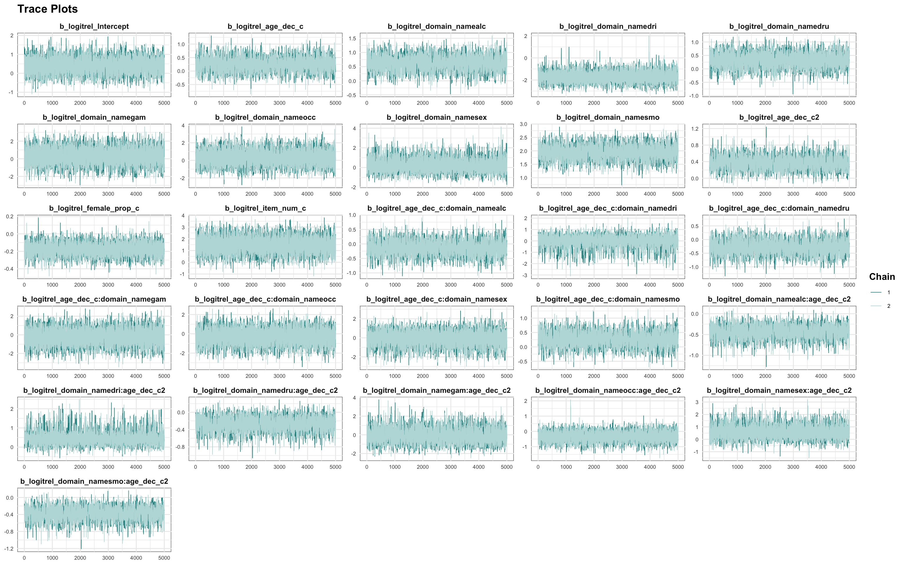
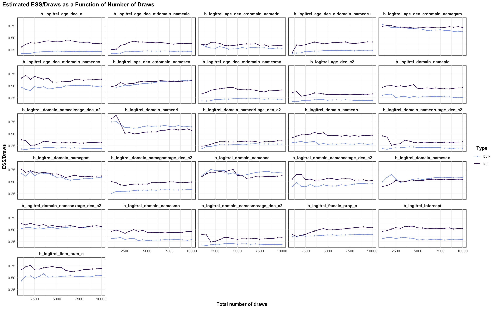
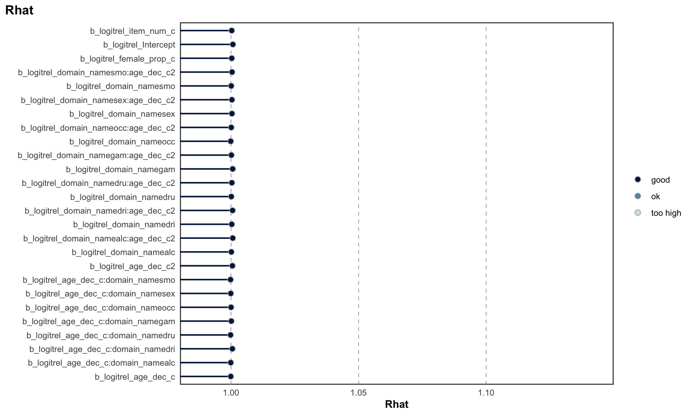
logitchange parameter
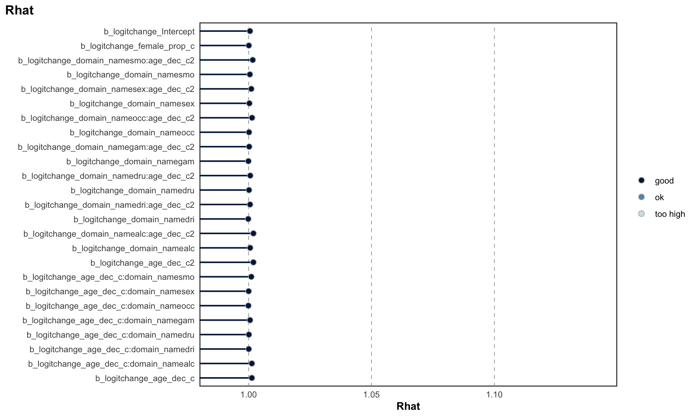
logitstabch parameter
Random Structure
PPCs & LOO
Graphical posterior predictive checks
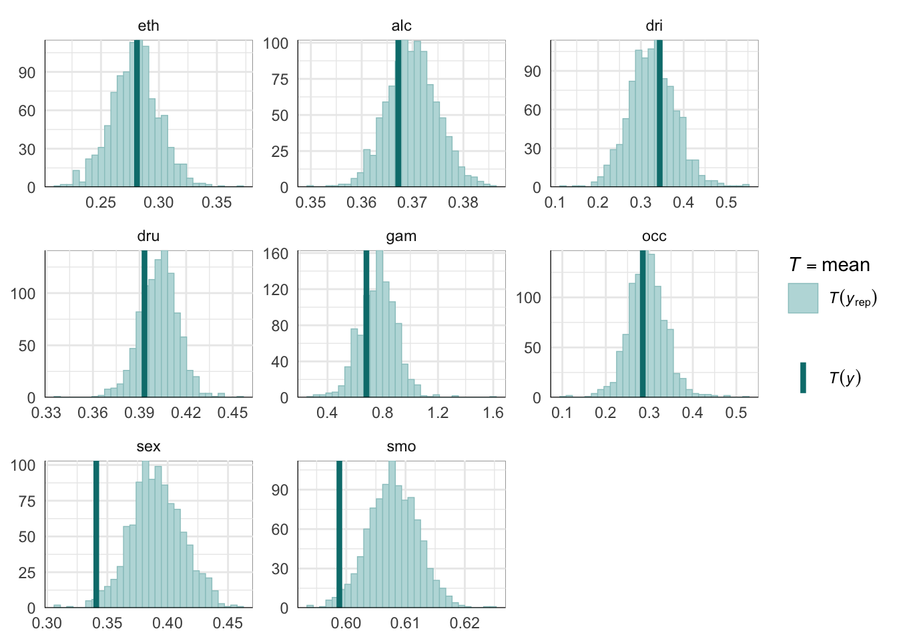
##
## Computed from 10000 by 3963 log-likelihood matrix.
##
## Estimate SE
## elpd_loo 2697.2 67.9
## p_loo 201.2 6.2
## looic -5394.4 135.9
## ------
## MCSE of elpd_loo is NA.
## MCSE and ESS estimates assume MCMC draws (r_eff in [0.2, 1.5]).
##
## Pareto k diagnostic values:
## Count Pct. Min. ESS
## (-Inf, 0.7] (good) 3961 99.9% 879
## (0.7, 1] (bad) 1 0.0% <NA>
## (1, Inf) (very bad) 1 0.0% <NA>
## See help('pareto-k-diagnostic') for details.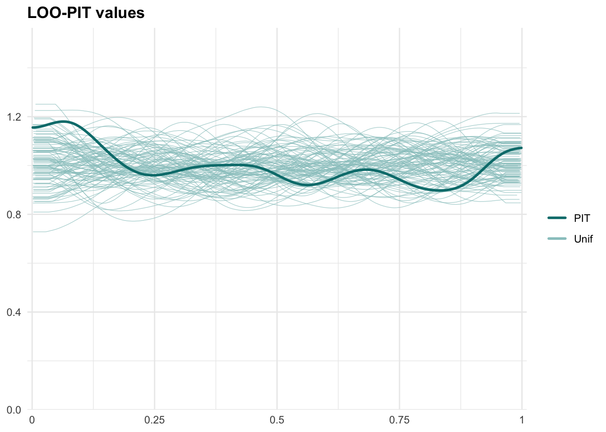
By-Panel Predictions
In tabs are panel-specific predictions for the trajectory of domain-specific test-retest correlations over time (predictions based on the weighted median age of the sample, 50% female, single-item measure as it is the most prevalent type of frequency measure).
Alcohol
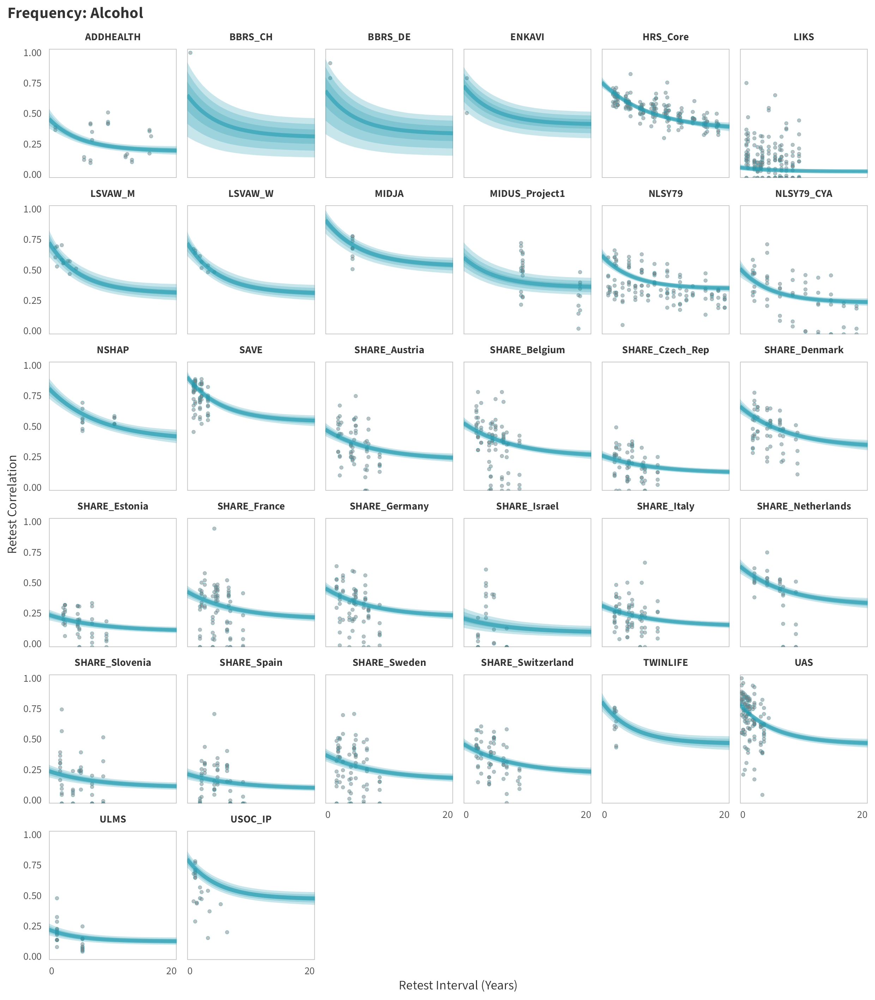Driving
Drugs
Ethical
Gambling
Occupational
Sexual Intercourse
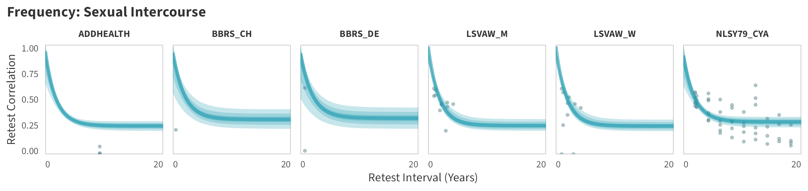Smoking
Behaviour
Model Summary
brms output
## Family: student
## Links: mu = identity; sigma = identity; nu = identity
## Formula: wcor | resp_se(sei, sigma = TRUE) ~ rel * (change * ((stabch^time_diff_dec) - 1) + 1)
## rel ~ inv_logit(logitrel)
## change ~ inv_logit(logitchange)
## stabch ~ inv_logit(logitstabch)
## logitrel ~ 1 + age_dec_c * domain_name + age_dec_c2 * domain_name + female_prop_c + item_num_c + (1 + age_dec_c + age_dec_c2 + female_prop_c | sample)
## logitchange ~ 1 + age_dec_c * domain_name + age_dec_c2 * domain_name + female_prop_c
## logitstabch ~ 1 + age_dec_c * domain_name + age_dec_c2 * domain_name + female_prop_c
## Data: data_w (Number of observations: 708)
## Draws: 2 chains, each with iter = 7000; warmup = 2000; thin = 1;
## total post-warmup draws = 10000
##
## Multilevel Hyperparameters:
## ~sample (Number of levels: 24)
## Estimate Est.Error l-95% CI u-95% CI Rhat Bulk_ESS Tail_ESS
## sd(logitrel_Intercept) 1.04 0.18 0.75 1.45 1.00 3683 6076
## sd(logitrel_age_dec_c) 0.12 0.05 0.03 0.25 1.00 3357 2971
## sd(logitrel_age_dec_c2) 0.03 0.02 0.00 0.07 1.00 3325 4147
## sd(logitrel_female_prop_c) 0.21 0.08 0.09 0.39 1.00 5967 6902
## cor(logitrel_Intercept,logitrel_age_dec_c) 0.25 0.33 -0.46 0.79 1.00 8414 7411
## cor(logitrel_Intercept,logitrel_age_dec_c2) -0.09 0.44 -0.83 0.76 1.00 10782 6792
## cor(logitrel_age_dec_c,logitrel_age_dec_c2) -0.00 0.43 -0.78 0.79 1.00 7609 7061
## cor(logitrel_Intercept,logitrel_female_prop_c) 0.49 0.32 -0.28 0.93 1.00 7884 6953
## cor(logitrel_age_dec_c,logitrel_female_prop_c) -0.20 0.37 -0.84 0.54 1.00 6253 7273
## cor(logitrel_age_dec_c2,logitrel_female_prop_c) -0.18 0.42 -0.85 0.69 1.00 4138 6469
##
## Regression Coefficients:
## Estimate Est.Error l-95% CI u-95% CI Rhat Bulk_ESS Tail_ESS
## logitrel_Intercept -1.11 0.23 -1.56 -0.66 1.00 2179 3939
## logitrel_age_dec_c -0.05 0.06 -0.18 0.06 1.00 4364 5655
## logitrel_domain_namegam 0.02 0.07 -0.12 0.15 1.00 5544 7196
## logitrel_domain_nameins -0.26 0.09 -0.42 -0.08 1.00 6186 7519
## logitrel_domain_nameocc -0.13 0.07 -0.26 -0.00 1.00 6526 6717
## logitrel_age_dec_c2 0.01 0.02 -0.03 0.05 1.00 4879 4963
## logitrel_female_prop_c -0.20 0.09 -0.39 -0.03 1.00 4306 5381
## logitrel_item_num_c 0.42 0.32 -0.18 1.06 1.00 4945 5478
## logitrel_age_dec_c:domain_namegam 0.10 0.05 0.00 0.19 1.00 5715 6723
## logitrel_age_dec_c:domain_nameins -0.09 0.06 -0.23 0.03 1.00 5596 5965
## logitrel_age_dec_c:domain_nameocc -0.02 0.06 -0.14 0.09 1.00 3817 5563
## logitrel_domain_namegam:age_dec_c2 -0.00 0.02 -0.04 0.04 1.00 4808 5422
## logitrel_domain_nameins:age_dec_c2 0.05 0.03 -0.00 0.11 1.00 4671 3736
## logitrel_domain_nameocc:age_dec_c2 -0.02 0.02 -0.06 0.03 1.00 5047 4731
## logitchange_Intercept -0.26 0.87 -1.85 1.58 1.00 1794 5657
## logitchange_age_dec_c 0.01 0.71 -1.46 1.39 1.00 6331 7838
## logitchange_domain_namegam -0.56 0.98 -2.44 1.42 1.00 3032 7075
## logitchange_domain_nameins 0.29 0.91 -1.55 2.08 1.00 8955 7333
## logitchange_domain_nameocc -0.00 0.88 -1.68 1.74 1.00 1141 4547
## logitchange_age_dec_c2 0.23 0.76 -1.13 1.80 1.00 781 3368
## logitchange_female_prop_c -0.05 1.03 -2.03 1.73 1.01 470 3789
## logitchange_age_dec_c:domain_namegam -0.46 0.90 -2.18 1.33 1.00 10788 8148
## logitchange_age_dec_c:domain_nameins 0.01 0.90 -1.79 1.73 1.00 9073 7425
## logitchange_age_dec_c:domain_nameocc -0.44 0.77 -2.00 1.06 1.00 2031 5314
## logitchange_domain_namegam:age_dec_c2 -0.43 0.88 -2.18 1.35 1.00 4282 6684
## logitchange_domain_nameins:age_dec_c2 -0.18 0.85 -1.87 1.50 1.00 5877 6786
## logitchange_domain_nameocc:age_dec_c2 0.16 0.66 -1.16 1.45 1.00 2790 5388
## logitstabch_Intercept 0.47 0.78 -1.13 1.95 1.00 1702 5455
## logitstabch_age_dec_c 0.08 0.64 -1.16 1.39 1.00 5369 6513
## logitstabch_domain_namegam 0.50 0.91 -1.33 2.26 1.00 4221 7269
## logitstabch_domain_nameins -0.42 0.86 -2.05 1.32 1.00 7141 7861
## logitstabch_domain_nameocc -0.04 0.79 -1.64 1.52 1.00 1259 4432
## logitstabch_age_dec_c2 -0.06 0.60 -1.35 1.05 1.00 818 2854
## logitstabch_female_prop_c -0.11 0.90 -1.69 1.76 1.01 488 2894
## logitstabch_age_dec_c:domain_namegam 0.41 0.86 -1.33 2.05 1.00 9022 8000
## logitstabch_age_dec_c:domain_nameins -0.12 0.85 -1.76 1.59 1.00 7342 6752
## logitstabch_age_dec_c:domain_nameocc 0.36 0.67 -0.91 1.77 1.00 4929 6089
## logitstabch_domain_namegam:age_dec_c2 0.26 0.81 -1.38 1.89 1.00 5632 6671
## logitstabch_domain_nameins:age_dec_c2 0.01 0.75 -1.57 1.51 1.00 5168 6195
## logitstabch_domain_nameocc:age_dec_c2 -0.44 0.58 -1.67 0.66 1.00 1474 4206
##
## Further Distributional Parameters:
## Estimate Est.Error l-95% CI u-95% CI Rhat Bulk_ESS Tail_ESS
## sigma 0.03 0.01 0.01 0.04 1.00 4013 2314
## nu 6.18 1.44 4.09 9.62 1.00 6771 5239
##
## Draws were sampled using sample(hmc). For each parameter, Bulk_ESS
## and Tail_ESS are effective sample size measures, and Rhat is the potential
## scale reduction factor on split chains (at convergence, Rhat = 1).MCMC diagnostics
logitrel parameter
logitchange parameter
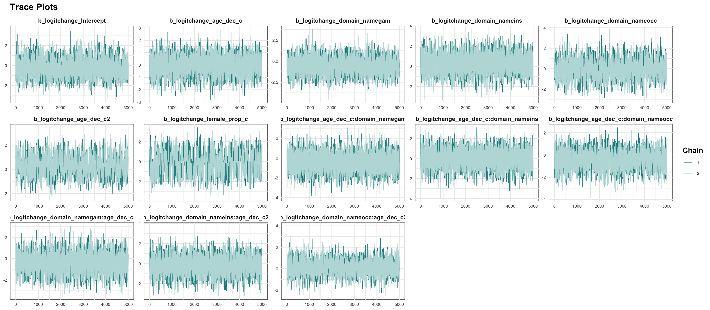

logitstabch parameter
Random Structure
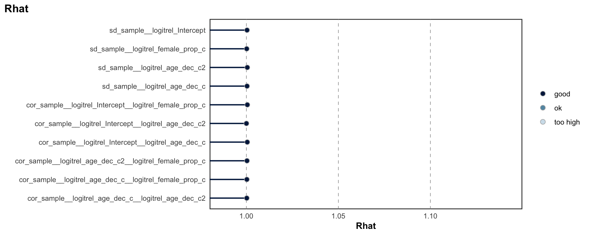
PPCs & LOO
Graphical posterior predictive checks
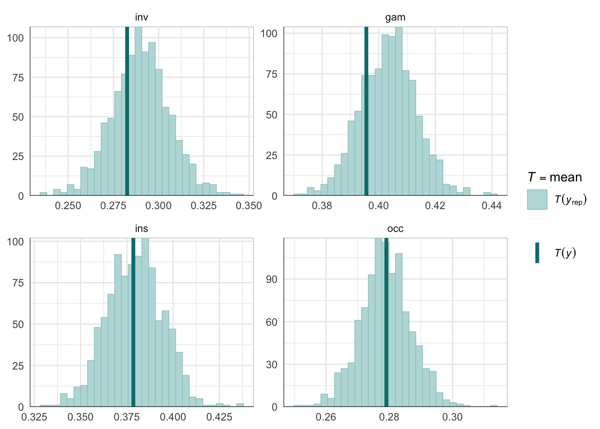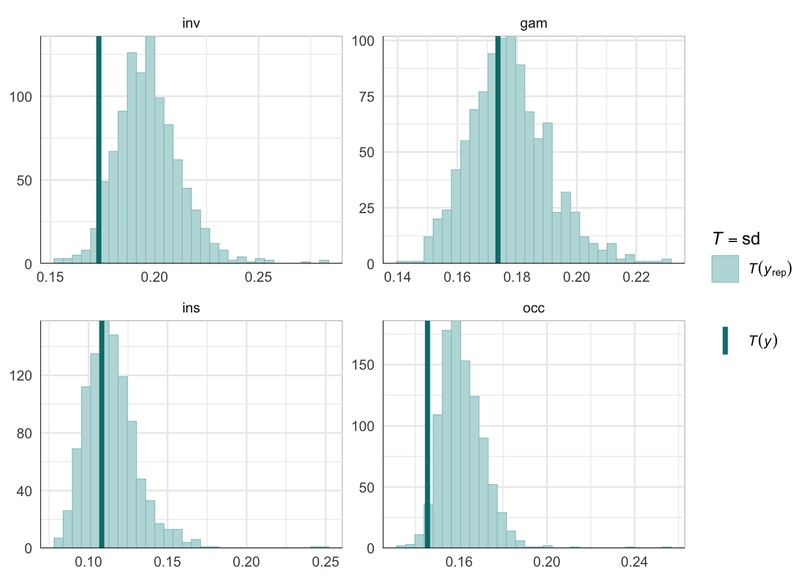
##
## Computed from 10000 by 708 log-likelihood matrix.
##
## Estimate SE
## elpd_loo 643.4 26.1
## p_loo 69.3 3.3
## looic -1286.9 52.2
## ------
## MCSE of elpd_loo is 0.1.
## MCSE and ESS estimates assume MCMC draws (r_eff in [0.1, 1.4]).
##
## All Pareto k estimates are good (k < 0.7).
## See help('pareto-k-diagnostic') for details.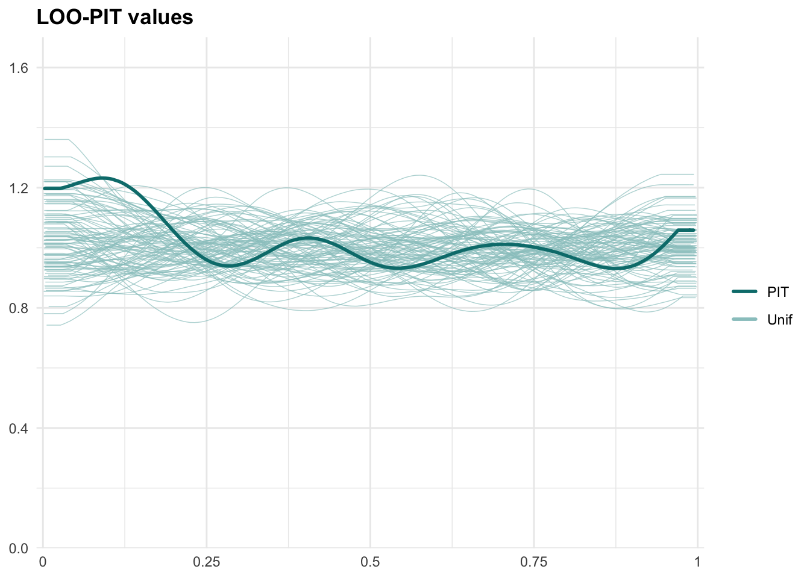
By-Panel Predictions
In tabs are panel-specific predictions for the trajectory of domain-specific test-retest correlations over time (predictions based on the weighted median age of the sample, 50% female, overall effect of item number).
Gambling
Insurance

Investment
Occupational
Fitted Model: Anusic & Schimmack (2015)
Model Specfication
For the modeling of the reliability parameter we did not include a random structure given that in this dataset close to 70% of the studies/samples had 4 or less observations. This results in a lack of response variability within each study/sample, and can be problematic for model convergence, as well as the estimation of random intercepts and slopes.
# specify family
family <- brmsfamily(
family = "student",
link = "identity"
)
# formula
formula <- bf(
wcor | se(se, sigma = TRUE) ~ rel * ((1-change) + (change) * (stabch^time_diff_dec)), #
nlf(rel ~ inv_logit(logitrel)),
nlf(change ~ inv_logit(logitchange)),
nlf(stabch ~ inv_logit(logitstabch)),
logitrel ~ 1 + construct*age_dec_c + construct*age_dec_c2 + female_prop_c,
logitchange ~ 1+ construct*age_dec_c + construct*age_dec_c2 + female_prop_c,
logitstabch ~ 1+ construct*age_dec_c + construct*age_dec_c2 + female_prop_c,
nl = TRUE
)
# weakly informative priors
priors <-
prior(normal(0,1), nlpar="logitrel", class = "b") +
prior(normal(0,1), nlpar="logitchange", class = "b") +
prior(normal(0,1), nlpar="logitstabch", class = "b") +
prior(normal(0,1), class = "sigma")Model Summary
brms output
## Family: student
## Links: mu = identity; sigma = identity; nu = identity
## Formula: retest | resp_se(se, sigma = TRUE) ~ rel * (change * ((stabch^time_diff_dec) - 1) + 1)
## rel ~ inv_logit(logitrel)
## change ~ inv_logit(logitchange)
## stabch ~ inv_logit(logitstabch)
## logitrel ~ 1 + age_dec_c * construct + age_dec_c2 * construct + female_prop_c + item_num_c
## logitchange ~ 1 + age_dec_c * construct + age_dec_c2 * construct + female_prop_c
## logitstabch ~ 1 + age_dec_c * construct + age_dec_c2 * construct + female_prop_c
## Data: data_as (Number of observations: 949)
## Draws: 2 chains, each with iter = 7000; warmup = 2000; thin = 1;
## total post-warmup draws = 10000
##
## Regression Coefficients:
## Estimate Est.Error l-95% CI u-95% CI Rhat Bulk_ESS Tail_ESS
## logitrel_Intercept 0.33 0.07 0.20 0.48 1.00 5079 5304
## logitrel_age_dec_c -0.16 0.05 -0.25 -0.05 1.00 2295 2195
## logitrel_constructaffe -0.43 0.10 -0.64 -0.23 1.00 7465 6855
## logitrel_constructlife 0.27 0.11 0.06 0.48 1.00 5391 6523
## logitrel_constructself -0.17 0.15 -0.43 0.18 1.00 4911 4225
## logitrel_age_dec_c2 0.05 0.02 0.01 0.11 1.00 1615 1445
## logitrel_female_prop_c -0.02 0.07 -0.16 0.13 1.00 9098 7318
## logitrel_item_num_c 0.67 0.08 0.52 0.83 1.00 10888 7815
## logitrel_age_dec_c:constructaffe -0.01 0.06 -0.14 0.11 1.00 2968 2778
## logitrel_age_dec_c:constructlife 0.18 0.05 0.07 0.28 1.00 2530 2359
## logitrel_age_dec_c:constructself -0.23 0.13 -0.46 0.07 1.00 2125 1787
## logitrel_constructaffe:age_dec_c2 -0.00 0.03 -0.07 0.05 1.00 2072 1794
## logitrel_constructlife:age_dec_c2 -0.05 0.03 -0.11 -0.01 1.00 1876 1687
## logitrel_constructself:age_dec_c2 0.04 0.06 -0.04 0.21 1.00 1796 1355
## logitchange_Intercept -0.07 0.43 -0.89 0.79 1.00 1272 2628
## logitchange_age_dec_c 0.07 0.39 -0.70 0.83 1.00 868 1961
## logitchange_constructaffe 0.53 0.70 -0.71 2.06 1.00 4030 5420
## logitchange_constructlife 0.40 0.47 -0.49 1.34 1.00 1531 4998
## logitchange_constructself -0.25 0.60 -1.47 0.84 1.00 1990 4131
## logitchange_age_dec_c2 0.31 0.21 -0.01 0.81 1.00 1457 1888
## logitchange_female_prop_c -0.22 0.10 -0.42 -0.04 1.00 9605 6783
## logitchange_age_dec_c:constructaffe -0.42 0.64 -1.69 0.89 1.00 2852 4897
## logitchange_age_dec_c:constructlife 0.24 0.42 -0.56 1.11 1.00 1037 3300
## logitchange_age_dec_c:constructself -0.70 0.55 -1.82 0.28 1.00 1562 3269
## logitchange_constructaffe:age_dec_c2 0.42 0.59 -0.34 1.81 1.00 2999 4380
## logitchange_constructlife:age_dec_c2 -0.15 0.22 -0.65 0.20 1.00 1669 3294
## logitchange_constructself:age_dec_c2 -0.48 0.23 -0.99 -0.10 1.00 1896 2921
## logitstabch_Intercept -0.11 0.52 -1.23 0.79 1.00 1552 2954
## logitstabch_age_dec_c 0.88 0.48 -0.30 1.65 1.00 675 1228
## logitstabch_constructaffe 0.23 0.64 -1.15 1.42 1.00 2491 4482
## logitstabch_constructlife -0.49 0.57 -1.61 0.62 1.00 1959 3889
## logitstabch_constructself -0.16 0.85 -1.96 1.42 1.00 4113 5683
## logitstabch_age_dec_c2 -0.32 0.21 -0.82 0.03 1.00 679 1069
## logitstabch_female_prop_c -0.43 0.28 -1.10 0.01 1.00 7964 5139
## logitstabch_age_dec_c:constructaffe -0.55 0.59 -1.75 0.75 1.00 874 1202
## logitstabch_age_dec_c:constructlife -0.27 0.49 -1.04 0.93 1.00 680 1206
## logitstabch_age_dec_c:constructself -0.05 0.76 -1.49 1.57 1.00 1143 2348
## logitstabch_constructaffe:age_dec_c2 0.19 0.25 -0.31 0.73 1.00 858 1141
## logitstabch_constructlife:age_dec_c2 0.21 0.21 -0.15 0.72 1.00 694 1102
## logitstabch_constructself:age_dec_c2 -0.33 0.37 -1.01 0.47 1.00 1426 2973
##
## Further Distributional Parameters:
## Estimate Est.Error l-95% CI u-95% CI Rhat Bulk_ESS Tail_ESS
## sigma 0.07 0.00 0.07 0.08 1.00 7693 6868
## nu 3.35 0.56 2.49 4.66 1.00 7902 6667
##
## Draws were sampled using sample(hmc). For each parameter, Bulk_ESS
## and Tail_ESS are effective sample size measures, and Rhat is the potential
## scale reduction factor on split chains (at convergence, Rhat = 1).MCMC diagnostics
logitrel parameter

logitchange parameter

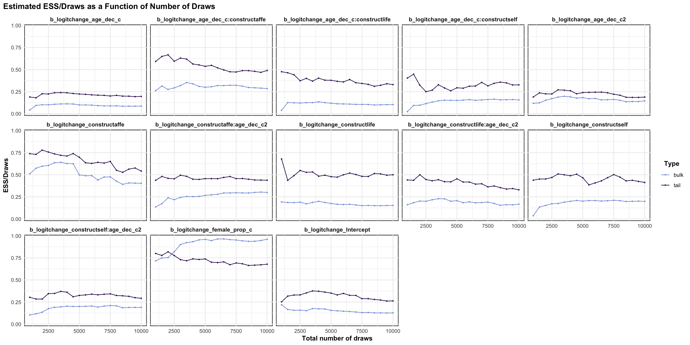
logitstabch parameter
Random Structure
NOT APPLICABLE
PPCs & LOO
Graphical posterior predictive checks
##
## Computed from 10000 by 949 log-likelihood matrix.
##
## Estimate SE
## elpd_loo 798.7 31.2
## p_loo 47.7 2.2
## looic -1597.5 62.3
## ------
## MCSE of elpd_loo is 0.1.
## MCSE and ESS estimates assume MCMC draws (r_eff in [0.1, 1.2]).
##
## All Pareto k estimates are good (k < 0.7).
## See help('pareto-k-diagnostic') for details.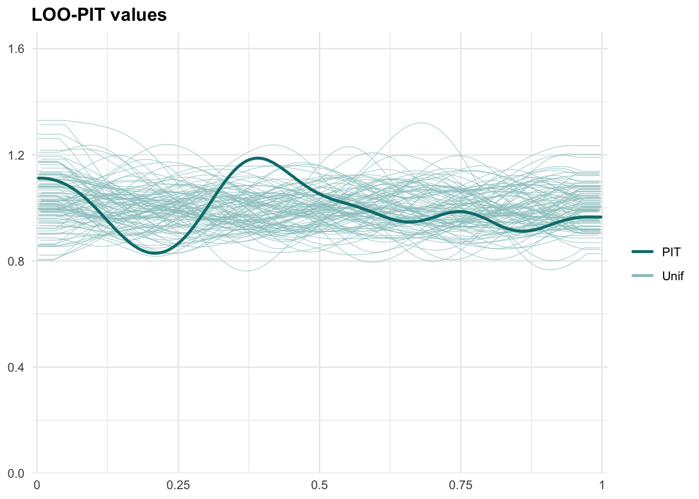
By-Construct Predictions
Construct-specific predictions for the trajectory of test-retest correlations over time (predictions based on the weighted mean age of the respondents for each construct, 50% female, overall effect of item number).

Social